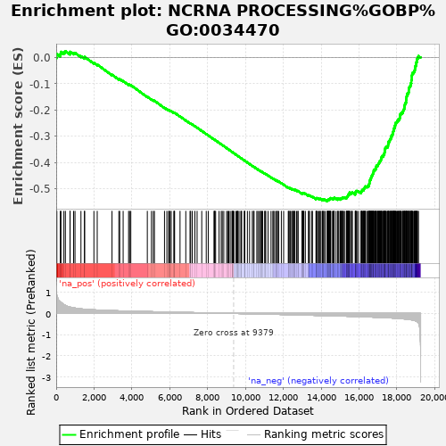

| | | Dataset | rankedList |
| Phenotype | NoPhenotypeAvailable |
| Upregulated in class | na_neg |
| GeneSet | NCRNA PROCESSING%GOBP%GO:0034470 |
| Enrichment Score (ES) | -0.5483762 |
| Normalized Enrichment Score (NES) | -2.713207 |
| Nominal p-value | 0.0 |
| FDR q-value | 0.0 |
| FWER p-Value | 0.0 |
Table: GSEA Results Summary

Fig 1: Enrichment plot: NCRNA PROCESSING%GOBP%GO:0034470
Profile of the Running ES Score & Positions of GeneSet Members on the Rank Ordered List
| PROBE | GENE SYMBOL | GENE_TITLE | RANK IN GENE LIST | RANK METRIC SCORE | RUNNING ES | CORE ENRICHMENT | | 1 | RIOK3 | | | 35 | 0.851 | 0.0137 | No |
| 2 | RCL1 | | | 217 | 0.554 | 0.0142 | No |
| 3 | NSUN3 | | | 252 | 0.530 | 0.0221 | No |
| 4 | PA2G4 | | | 407 | 0.419 | 0.0216 | No |
| 5 | AGO2 | | | 485 | 0.381 | 0.0245 | No |
| 6 | ERCC2 | | | 730 | 0.300 | 0.0170 | No |
| 7 | C1D | | | 735 | 0.300 | 0.0223 | No |
| 8 | POP7 | | | 920 | 0.263 | 0.0173 | No |
| 9 | RPS24 | | | 993 | 0.254 | 0.0182 | No |
| 10 | CTU1 | | | 1308 | 0.216 | 0.0055 | No |
| 11 | CTU2 | | | 1492 | 0.201 | -0.0005 | No |
| 12 | FBLL1 | | | 1504 | 0.200 | 0.0025 | No |
| 13 | RPL35A | | | 1993 | 0.171 | -0.0202 | No |
| 14 | TSR3 | | | 2168 | 0.162 | -0.0264 | No |
| 15 | ZNHIT3 | | | 2949 | 0.134 | -0.0652 | No |
| 16 | DGCR8 | | | 3311 | 0.123 | -0.0821 | No |
| 17 | LAGE3 | | | 3357 | 0.121 | -0.0822 | No |
| 18 | RPUSD1 | | | 3538 | 0.116 | -0.0896 | No |
| 19 | PUS1 | | | 3825 | 0.110 | -0.1028 | No |
| 20 | FBXW9 | | | 3877 | 0.108 | -0.1035 | No |
| 21 | RPL11 | | | 3943 | 0.107 | -0.1050 | No |
| 22 | EXOSC6 | | | 4815 | 0.088 | -0.1494 | No |
| 23 | DDX49 | | | 5034 | 0.083 | -0.1595 | No |
| 24 | RPP25 | | | 5132 | 0.081 | -0.1631 | No |
| 25 | NPM3 | | | 5190 | 0.080 | -0.1647 | No |
| 26 | INTS5 | | | 5723 | 0.068 | -0.1916 | No |
| 27 | TARBP2 | | | 5849 | 0.066 | -0.1970 | No |
| 28 | RNF113A | | | 5946 | 0.064 | -0.2009 | No |
| 29 | TRPT1 | | | 5966 | 0.064 | -0.2007 | No |
| 30 | RNF113B | | | 6022 | 0.063 | -0.2025 | No |
| 31 | TSEN2 | | | 6076 | 0.062 | -0.2042 | No |
| 32 | USB1 | | | 6216 | 0.059 | -0.2104 | No |
| 33 | DDX51 | | | 6242 | 0.058 | -0.2107 | No |
| 34 | FCF1 | | | 6257 | 0.058 | -0.2104 | No |
| 35 | TRMT61A | | | 6544 | 0.053 | -0.2245 | No |
| 36 | TRMT1L | | | 6848 | 0.047 | -0.2397 | No |
| 37 | KIAA1456 | | | 7072 | 0.043 | -0.2507 | No |
| 38 | DUS1L | | | 7103 | 0.043 | -0.2515 | No |
| 39 | RRS1 | | | 7187 | 0.041 | -0.2552 | No |
| 40 | DPH3 | | | 7329 | 0.038 | -0.2619 | No |
| 41 | NOP10 | | | 7445 | 0.036 | -0.2674 | No |
| 42 | PUSL1 | | | 7691 | 0.031 | -0.2798 | No |
| 43 | BTRC | | | 7929 | 0.027 | -0.2918 | No |
| 44 | RRP36 | | | 8035 | 0.025 | -0.2969 | No |
| 45 | TSEN34 | | | 8337 | 0.019 | -0.3125 | No |
| 46 | INTS1 | | | 8372 | 0.019 | -0.3139 | No |
| 47 | AGO4 | | | 8376 | 0.018 | -0.3138 | No |
| 48 | ISG20 | | | 8424 | 0.017 | -0.3159 | No |
| 49 | BCDIN3D | | | 8607 | 0.014 | -0.3253 | No |
| 50 | PARN | | | 8721 | 0.012 | -0.3310 | No |
| 51 | ERI1 | | | 8776 | 0.011 | -0.3337 | No |
| 52 | GAR1 | | | 8857 | 0.010 | -0.3378 | No |
| 53 | METTL2A | | | 9005 | 0.007 | -0.3454 | No |
| 54 | TBL3 | | | 9069 | 0.006 | -0.3486 | No |
| 55 | SBDS | | | 9123 | 0.005 | -0.3514 | No |
| 56 | FAM207A | | | 9194 | 0.003 | -0.3550 | No |
| 57 | KARS | | | 9293 | 0.001 | -0.3602 | No |
| 58 | RPS9 | | | 9298 | 0.001 | -0.3603 | No |
| 59 | RPL7 | | | 9330 | 0.001 | -0.3620 | No |
| 60 | RRP1 | | | 9354 | 0.000 | -0.3632 | No |
| 61 | LIN28A | | | 9392 | -0.000 | -0.3651 | No |
| 62 | ZBTB8OS | | | 9500 | -0.002 | -0.3707 | No |
| 63 | RPS17 | | | 9538 | -0.003 | -0.3726 | No |
| 64 | SART1 | | | 9584 | -0.004 | -0.3750 | No |
| 65 | RRP9 | | | 9588 | -0.004 | -0.3750 | No |
| 66 | ADAR | | | 9622 | -0.005 | -0.3767 | No |
| 67 | FDXACB1 | | | 9710 | -0.007 | -0.3812 | No |
| 68 | METTL8 | | | 9788 | -0.008 | -0.3851 | No |
| 69 | EXOSC4 | | | 9795 | -0.008 | -0.3853 | No |
| 70 | UTP3 | | | 9946 | -0.011 | -0.3930 | No |
| 71 | SUV39H1 | | | 9950 | -0.011 | -0.3929 | No |
| 72 | IMP3 | | | 9966 | -0.012 | -0.3935 | No |
| 73 | NOC4L | | | 10103 | -0.014 | -0.4005 | No |
| 74 | RPUSD2 | | | 10218 | -0.016 | -0.4062 | No |
| 75 | RPS15 | | | 10364 | -0.019 | -0.4135 | No |
| 76 | ADAT1 | | | 10425 | -0.021 | -0.4163 | No |
| 77 | RRP15 | | | 10455 | -0.021 | -0.4175 | No |
| 78 | RBFA | | | 10602 | -0.024 | -0.4248 | No |
| 79 | CLP1 | | | 10656 | -0.025 | -0.4271 | No |
| 80 | ELAC1 | | | 10732 | -0.026 | -0.4306 | No |
| 81 | LYAR | | | 10804 | -0.028 | -0.4338 | No |
| 82 | BOP1 | | | 10811 | -0.028 | -0.4336 | No |
| 83 | GEMIN4 | | | 10872 | -0.029 | -0.4363 | No |
| 84 | WDR37 | | | 10912 | -0.030 | -0.4378 | No |
| 85 | TPRKB | | | 11017 | -0.032 | -0.4427 | No |
| 86 | TSEN54 | | | 11036 | -0.033 | -0.4431 | No |
| 87 | TRMU | | | 11076 | -0.033 | -0.4445 | No |
| 88 | INTS6 | | | 11196 | -0.036 | -0.4502 | No |
| 89 | GTPBP3 | | | 11352 | -0.039 | -0.4576 | No |
| 90 | XRN2 | | | 11447 | -0.041 | -0.4619 | No |
| 91 | BMS1 | | | 11490 | -0.042 | -0.4633 | No |
| 92 | TRMT12 | | | 11549 | -0.043 | -0.4656 | No |
| 93 | ZCCHC6 | | | 11635 | -0.044 | -0.4693 | No |
| 94 | KRI1 | | | 11683 | -0.045 | -0.4710 | No |
| 95 | DUS4L | | | 11685 | -0.045 | -0.4702 | No |
| 96 | HSD17B10 | | | 11761 | -0.047 | -0.4733 | No |
| 97 | CSTF2 | | | 11897 | -0.050 | -0.4795 | No |
| 98 | PES1 | | | 12018 | -0.053 | -0.4849 | No |
| 99 | CPSF1 | | | 12263 | -0.059 | -0.4967 | No |
| 100 | DDX54 | | | 12286 | -0.059 | -0.4968 | No |
| 101 | RRNAD1 | | | 12341 | -0.061 | -0.4986 | No |
| 102 | GTF2H5 | | | 12366 | -0.061 | -0.4987 | No |
| 103 | TFB2M | | | 12439 | -0.063 | -0.5014 | No |
| 104 | TEX10 | | | 12491 | -0.064 | -0.5029 | No |
| 105 | DUS3L | | | 12518 | -0.065 | -0.5031 | No |
| 106 | WDR18 | | | 12551 | -0.066 | -0.5036 | No |
| 107 | MRPS11 | | | 12597 | -0.067 | -0.5048 | No |
| 108 | TRMT10B | | | 12616 | -0.067 | -0.5045 | No |
| 109 | TRMT44 | | | 12704 | -0.069 | -0.5079 | No |
| 110 | INTS12 | | | 12775 | -0.070 | -0.5103 | No |
| 111 | FTSJ2 | | | 12779 | -0.070 | -0.5092 | No |
| 112 | RNMTL1 | | | 12987 | -0.075 | -0.5187 | No |
| 113 | TSEN15 | | | 13006 | -0.076 | -0.5183 | No |
| 114 | ANKRD16 | | | 13012 | -0.076 | -0.5172 | No |
| 115 | RPS2 | | | 13042 | -0.077 | -0.5173 | No |
| 116 | ELP6 | | | 13069 | -0.077 | -0.5173 | No |
| 117 | PELP1 | | | 13087 | -0.077 | -0.5168 | No |
| 118 | DICER1 | | | 13166 | -0.079 | -0.5195 | No |
| 119 | DHX37 | | | 13332 | -0.083 | -0.5267 | No |
| 120 | CPSF3L | | | 13349 | -0.084 | -0.5260 | No |
| 121 | RPL7L1 | | | 13383 | -0.084 | -0.5262 | No |
| 122 | OSGEPL1 | | | 13493 | -0.087 | -0.5304 | No |
| 123 | MPHOSPH10 | | | 13543 | -0.089 | -0.5313 | No |
| 124 | RPP40 | | | 13727 | -0.093 | -0.5393 | No |
| 125 | INTS7 | | | 13739 | -0.093 | -0.5382 | No |
| 126 | INTS3 | | | 13747 | -0.093 | -0.5369 | No |
| 127 | PWP2 | | | 13769 | -0.094 | -0.5363 | No |
| 128 | WDR55 | | | 13819 | -0.095 | -0.5371 | No |
| 129 | TSR1 | | | 13886 | -0.096 | -0.5389 | No |
| 130 | TYW1 | | | 13942 | -0.097 | -0.5400 | No |
| 131 | SMAD1 | | | 13961 | -0.098 | -0.5392 | No |
| 132 | PAPD5 | | | 14053 | -0.100 | -0.5422 | No |
| 133 | ERI3 | | | 14067 | -0.100 | -0.5410 | No |
| 134 | DCAF13 | | | 14126 | -0.102 | -0.5422 | No |
| 135 | DDX26B | | | 14137 | -0.102 | -0.5409 | No |
| 136 | RPP14 | | | 14209 | -0.104 | -0.5428 | No |
| 137 | EXOSC9 | | | 14316 | -0.106 | -0.5464 | Yes |
| 138 | RPS7 | | | 14327 | -0.107 | -0.5450 | Yes |
| 139 | EXOSC1 | | | 14347 | -0.107 | -0.5441 | Yes |
| 140 | GTPBP4 | | | 14362 | -0.108 | -0.5428 | Yes |
| 141 | SENP3 | | | 14400 | -0.108 | -0.5428 | Yes |
| 142 | RPS27 | | | 14415 | -0.109 | -0.5416 | Yes |
| 143 | PDCD11 | | | 14428 | -0.109 | -0.5402 | Yes |
| 144 | WDR46 | | | 14452 | -0.110 | -0.5394 | Yes |
| 145 | RPS14 | | | 14474 | -0.110 | -0.5385 | Yes |
| 146 | THUMPD2 | | | 14491 | -0.111 | -0.5374 | Yes |
| 147 | THG1L | | | 14512 | -0.112 | -0.5364 | Yes |
| 148 | RPS19 | | | 14600 | -0.114 | -0.5389 | Yes |
| 149 | CPSF4 | | | 14652 | -0.115 | -0.5395 | Yes |
| 150 | METTL2B | | | 14656 | -0.115 | -0.5376 | Yes |
| 151 | DKC1 | | | 14679 | -0.116 | -0.5366 | Yes |
| 152 | INTS10 | | | 14688 | -0.116 | -0.5349 | Yes |
| 153 | DDX21 | | | 14789 | -0.118 | -0.5381 | Yes |
| 154 | GRSF1 | | | 14880 | -0.120 | -0.5406 | Yes |
| 155 | C9orf64 | | | 14884 | -0.120 | -0.5386 | Yes |
| 156 | NOLC1 | | | 14931 | -0.122 | -0.5388 | Yes |
| 157 | NOL6 | | | 15001 | -0.124 | -0.5402 | Yes |
| 158 | CIRH1A | | | 15015 | -0.124 | -0.5386 | Yes |
| 159 | MRTO4 | | | 15047 | -0.125 | -0.5380 | Yes |
| 160 | TFB1M | | | 15073 | -0.125 | -0.5370 | Yes |
| 161 | DDX52 | | | 15112 | -0.126 | -0.5367 | Yes |
| 162 | QTRTD1 | | | 15120 | -0.127 | -0.5348 | Yes |
| 163 | QTRT1 | | | 15141 | -0.128 | -0.5335 | Yes |
| 164 | FTSJ1 | | | 15188 | -0.129 | -0.5336 | Yes |
| 165 | PRKRA | | | 15234 | -0.130 | -0.5336 | Yes |
| 166 | UTP14A | | | 15330 | -0.132 | -0.5362 | Yes |
| 167 | RPL35 | | | 15347 | -0.133 | -0.5347 | Yes |
| 168 | PIH1D1 | | | 15355 | -0.133 | -0.5326 | Yes |
| 169 | RPUSD4 | | | 15366 | -0.133 | -0.5307 | Yes |
| 170 | IMP4 | | | 15402 | -0.134 | -0.5301 | Yes |
| 171 | WDR4 | | | 15405 | -0.134 | -0.5278 | Yes |
| 172 | SARS | | | 15426 | -0.135 | -0.5264 | Yes |
| 173 | TRMT2B | | | 15427 | -0.135 | -0.5239 | Yes |
| 174 | NHP2 | | | 15437 | -0.135 | -0.5219 | Yes |
| 175 | FTSJ3 | | | 15487 | -0.136 | -0.5220 | Yes |
| 176 | TUT1 | | | 15496 | -0.137 | -0.5200 | Yes |
| 177 | NOL10 | | | 15499 | -0.137 | -0.5176 | Yes |
| 178 | C7orf60 | | | 15503 | -0.137 | -0.5152 | Yes |
| 179 | RNASEL | | | 15600 | -0.140 | -0.5178 | Yes |
| 180 | HNRNPA2B1 | | | 15610 | -0.140 | -0.5157 | Yes |
| 181 | AGO1 | | | 15651 | -0.141 | -0.5152 | Yes |
| 182 | RPS16 | | | 15799 | -0.145 | -0.5204 | Yes |
| 183 | RPP38 | | | 15811 | -0.146 | -0.5183 | Yes |
| 184 | NOP56 | | | 15815 | -0.146 | -0.5158 | Yes |
| 185 | RPP21 | | | 15817 | -0.146 | -0.5132 | Yes |
| 186 | RPL27 | | | 15838 | -0.146 | -0.5116 | Yes |
| 187 | REXO4 | | | 15845 | -0.146 | -0.5092 | Yes |
| 188 | TRMT112 | | | 15895 | -0.148 | -0.5091 | Yes |
| 189 | TRMT5 | | | 15977 | -0.151 | -0.5106 | Yes |
| 190 | SRRT | | | 16109 | -0.154 | -0.5148 | Yes |
| 191 | MOCS3 | | | 16115 | -0.154 | -0.5122 | Yes |
| 192 | FAM98B | | | 16136 | -0.155 | -0.5104 | Yes |
| 193 | ALKBH1 | | | 16147 | -0.155 | -0.5081 | Yes |
| 194 | YBEY | | | 16160 | -0.156 | -0.5059 | Yes |
| 195 | AARS2 | | | 16186 | -0.157 | -0.5044 | Yes |
| 196 | MTERF4 | | | 16245 | -0.159 | -0.5046 | Yes |
| 197 | MTFMT | | | 16247 | -0.159 | -0.5017 | Yes |
| 198 | CDK5RAP1 | | | 16255 | -0.159 | -0.4992 | Yes |
| 199 | NOP2 | | | 16285 | -0.160 | -0.4978 | Yes |
| 200 | METTL15 | | | 16308 | -0.161 | -0.4960 | Yes |
| 201 | EXOSC5 | | | 16326 | -0.161 | -0.4940 | Yes |
| 202 | METTL3 | | | 16339 | -0.162 | -0.4917 | Yes |
| 203 | URB1 | | | 16411 | -0.165 | -0.4924 | Yes |
| 204 | TRDMT1 | | | 16445 | -0.166 | -0.4911 | Yes |
| 205 | METTL16 | | | 16487 | -0.167 | -0.4903 | Yes |
| 206 | NHP2L1 | | | 16516 | -0.168 | -0.4887 | Yes |
| 207 | POP5 | | | 16519 | -0.168 | -0.4857 | Yes |
| 208 | TRUB1 | | | 16534 | -0.169 | -0.4834 | Yes |
| 209 | METTL1 | | | 16545 | -0.169 | -0.4808 | Yes |
| 210 | ELAC2 | | | 16552 | -0.169 | -0.4780 | Yes |
| 211 | WDR3 | | | 16556 | -0.169 | -0.4751 | Yes |
| 212 | ABT1 | | | 16557 | -0.169 | -0.4720 | Yes |
| 213 | WBP11 | | | 16564 | -0.170 | -0.4692 | Yes |
| 214 | POP1 | | | 16594 | -0.170 | -0.4677 | Yes |
| 215 | DDX17 | | | 16597 | -0.171 | -0.4647 | Yes |
| 216 | TRMT61B | | | 16629 | -0.172 | -0.4632 | Yes |
| 217 | NOB1 | | | 16631 | -0.172 | -0.4601 | Yes |
| 218 | KRR1 | | | 16639 | -0.172 | -0.4573 | Yes |
| 219 | RPF2 | | | 16668 | -0.173 | -0.4557 | Yes |
| 220 | PUS10 | | | 16679 | -0.174 | -0.4530 | Yes |
| 221 | KTI12 | | | 16682 | -0.174 | -0.4500 | Yes |
| 222 | DROSHA | | | 16710 | -0.175 | -0.4482 | Yes |
| 223 | TP53RK | | | 16723 | -0.175 | -0.4456 | Yes |
| 224 | RPS21 | | | 16737 | -0.176 | -0.4431 | Yes |
| 225 | POLR3K | | | 16748 | -0.176 | -0.4404 | Yes |
| 226 | ISG20L2 | | | 16766 | -0.177 | -0.4381 | Yes |
| 227 | WBSCR22 | | | 16775 | -0.177 | -0.4353 | Yes |
| 228 | NSUN2 | | | 16778 | -0.177 | -0.4322 | Yes |
| 229 | METTL6 | | | 16786 | -0.178 | -0.4293 | Yes |
| 230 | AARS | | | 16842 | -0.180 | -0.4289 | Yes |
| 231 | TSR2 | | | 16847 | -0.180 | -0.4258 | Yes |
| 232 | RRP1B | | | 16886 | -0.181 | -0.4245 | Yes |
| 233 | RPS28 | | | 16891 | -0.181 | -0.4215 | Yes |
| 234 | C9orf156 | | | 16910 | -0.183 | -0.4191 | Yes |
| 235 | INTS8 | | | 16914 | -0.183 | -0.4159 | Yes |
| 236 | TRNT1 | | | 16921 | -0.183 | -0.4129 | Yes |
| 237 | RPL14 | | | 16982 | -0.185 | -0.4127 | Yes |
| 238 | EXOSC7 | | | 16994 | -0.186 | -0.4099 | Yes |
| 239 | LSM6 | | | 17009 | -0.186 | -0.4072 | Yes |
| 240 | OSGEP | | | 17027 | -0.187 | -0.4047 | Yes |
| 241 | THUMPD3 | | | 17050 | -0.188 | -0.4024 | Yes |
| 242 | UTP11L | | | 17073 | -0.189 | -0.4002 | Yes |
| 243 | POP4 | | | 17079 | -0.189 | -0.3970 | Yes |
| 244 | ZNHIT6 | | | 17097 | -0.190 | -0.3944 | Yes |
| 245 | SMAD3 | | | 17133 | -0.192 | -0.3928 | Yes |
| 246 | TRIT1 | | | 17157 | -0.192 | -0.3905 | Yes |
| 247 | TRMT10C | | | 17165 | -0.193 | -0.3873 | Yes |
| 248 | MRPL44 | | | 17171 | -0.193 | -0.3841 | Yes |
| 249 | ALKBH8 | | | 17179 | -0.193 | -0.3809 | Yes |
| 250 | TRMT1 | | | 17207 | -0.194 | -0.3788 | Yes |
| 251 | ELP5 | | | 17217 | -0.195 | -0.3757 | Yes |
| 252 | EXOSC10 | | | 17282 | -0.198 | -0.3755 | Yes |
| 253 | MDN1 | | | 17299 | -0.198 | -0.3727 | Yes |
| 254 | HELQ | | | 17307 | -0.199 | -0.3695 | Yes |
| 255 | EIF6 | | | 17340 | -0.200 | -0.3675 | Yes |
| 256 | LCMT2 | | | 17342 | -0.200 | -0.3639 | Yes |
| 257 | AGO3 | | | 17354 | -0.201 | -0.3608 | Yes |
| 258 | NOL9 | | | 17358 | -0.201 | -0.3573 | Yes |
| 259 | C14orf166 | | | 17374 | -0.201 | -0.3545 | Yes |
| 260 | NSUN6 | | | 17377 | -0.201 | -0.3509 | Yes |
| 261 | RPS6 | | | 17386 | -0.202 | -0.3476 | Yes |
| 262 | NSA2 | | | 17394 | -0.202 | -0.3443 | Yes |
| 263 | RRP8 | | | 17427 | -0.204 | -0.3423 | Yes |
| 264 | KIAA0391 | | | 17451 | -0.204 | -0.3398 | Yes |
| 265 | C2orf49 | | | 17520 | -0.207 | -0.3396 | Yes |
| 266 | DDX56 | | | 17531 | -0.208 | -0.3363 | Yes |
| 267 | NOL11 | | | 17537 | -0.208 | -0.3328 | Yes |
| 268 | RPL5 | | | 17543 | -0.209 | -0.3293 | Yes |
| 269 | ZCCHC4 | | | 17554 | -0.209 | -0.3260 | Yes |
| 270 | DDX27 | | | 17557 | -0.209 | -0.3223 | Yes |
| 271 | LAS1L | | | 17572 | -0.210 | -0.3192 | Yes |
| 272 | INTS9 | | | 17624 | -0.212 | -0.3180 | Yes |
| 273 | WDR12 | | | 17628 | -0.212 | -0.3143 | Yes |
| 274 | NOP14 | | | 17640 | -0.212 | -0.3110 | Yes |
| 275 | RPL10A | | | 17673 | -0.214 | -0.3088 | Yes |
| 276 | TYW3 | | | 17697 | -0.215 | -0.3061 | Yes |
| 277 | PUS3 | | | 17701 | -0.216 | -0.3023 | Yes |
| 278 | EBNA1BP2 | | | 17707 | -0.216 | -0.2986 | Yes |
| 279 | URM1 | | | 17758 | -0.218 | -0.2973 | Yes |
| 280 | UTP20 | | | 17759 | -0.218 | -0.2933 | Yes |
| 281 | TYW5 | | | 17786 | -0.220 | -0.2907 | Yes |
| 282 | NGDN | | | 17790 | -0.220 | -0.2868 | Yes |
| 283 | UTP6 | | | 17799 | -0.220 | -0.2832 | Yes |
| 284 | UTP18 | | | 17817 | -0.221 | -0.2801 | Yes |
| 285 | NOL8 | | | 17838 | -0.222 | -0.2771 | Yes |
| 286 | DDX10 | | | 17844 | -0.223 | -0.2733 | Yes |
| 287 | DIEXF | | | 17849 | -0.223 | -0.2695 | Yes |
| 288 | RRP7A | | | 17879 | -0.224 | -0.2669 | Yes |
| 289 | SKIV2L2 | | | 17890 | -0.225 | -0.2633 | Yes |
| 290 | ZCCHC11 | | | 17892 | -0.225 | -0.2593 | Yes |
| 291 | MPHOSPH6 | | | 17918 | -0.226 | -0.2565 | Yes |
| 292 | PAPD7 | | | 17926 | -0.227 | -0.2527 | Yes |
| 293 | RPL26 | | | 17931 | -0.227 | -0.2488 | Yes |
| 294 | NSUN4 | | | 17978 | -0.230 | -0.2470 | Yes |
| 295 | ELP2 | | | 18013 | -0.232 | -0.2446 | Yes |
| 296 | VWA9 | | | 18027 | -0.233 | -0.2410 | Yes |
| 297 | EIF4A3 | | | 18075 | -0.236 | -0.2392 | Yes |
| 298 | MRPL1 | | | 18077 | -0.237 | -0.2349 | Yes |
| 299 | RPF1 | | | 18135 | -0.241 | -0.2336 | Yes |
| 300 | BYSL | | | 18150 | -0.241 | -0.2299 | Yes |
| 301 | EMG1 | | | 18159 | -0.242 | -0.2259 | Yes |
| 302 | CHD7 | | | 18162 | -0.242 | -0.2216 | Yes |
| 303 | MRM1 | | | 18165 | -0.243 | -0.2173 | Yes |
| 304 | MAK16 | | | 18206 | -0.246 | -0.2149 | Yes |
| 305 | THADA | | | 18227 | -0.248 | -0.2114 | Yes |
| 306 | WDR36 | | | 18281 | -0.252 | -0.2096 | Yes |
| 307 | FARS2 | | | 18319 | -0.254 | -0.2070 | Yes |
| 308 | RPP30 | | | 18330 | -0.255 | -0.2028 | Yes |
| 309 | TARBP1 | | | 18348 | -0.257 | -0.1990 | Yes |
| 310 | ADAT2 | | | 18377 | -0.259 | -0.1958 | Yes |
| 311 | DUS2 | | | 18398 | -0.261 | -0.1921 | Yes |
| 312 | SSB | | | 18399 | -0.261 | -0.1873 | Yes |
| 313 | SMAD2 | | | 18413 | -0.262 | -0.1833 | Yes |
| 314 | EXOSC3 | | | 18423 | -0.263 | -0.1789 | Yes |
| 315 | RIOK1 | | | 18435 | -0.264 | -0.1747 | Yes |
| 316 | NSUN5 | | | 18470 | -0.268 | -0.1716 | Yes |
| 317 | ELP3 | | | 18489 | -0.270 | -0.1676 | Yes |
| 318 | CDKAL1 | | | 18490 | -0.270 | -0.1627 | Yes |
| 319 | GLTSCR2 | | | 18501 | -0.271 | -0.1583 | Yes |
| 320 | DDX1 | | | 18510 | -0.272 | -0.1538 | Yes |
| 321 | SRFBP1 | | | 18516 | -0.272 | -0.1491 | Yes |
| 322 | TOE1 | | | 18527 | -0.273 | -0.1446 | Yes |
| 323 | DIMT1 | | | 18556 | -0.276 | -0.1410 | Yes |
| 324 | UTP15 | | | 18560 | -0.277 | -0.1362 | Yes |
| 325 | HEATR1 | | | 18610 | -0.282 | -0.1336 | Yes |
| 326 | THUMPD1 | | | 18627 | -0.284 | -0.1293 | Yes |
| 327 | DDX18 | | | 18630 | -0.284 | -0.1242 | Yes |
| 328 | IKBKAP | | | 18634 | -0.285 | -0.1192 | Yes |
| 329 | RPS8 | | | 18644 | -0.286 | -0.1144 | Yes |
| 330 | TRMT6 | | | 18672 | -0.288 | -0.1106 | Yes |
| 331 | NVL | | | 18709 | -0.295 | -0.1071 | Yes |
| 332 | INTS2 | | | 18733 | -0.297 | -0.1029 | Yes |
| 333 | RSL1D1 | | | 18736 | -0.297 | -0.0976 | Yes |
| 334 | WDR74 | | | 18766 | -0.302 | -0.0936 | Yes |
| 335 | NAF1 | | | 18767 | -0.302 | -0.0881 | Yes |
| 336 | INTS4 | | | 18776 | -0.303 | -0.0830 | Yes |
| 337 | FBL | | | 18790 | -0.306 | -0.0781 | Yes |
| 338 | MTO1 | | | 18791 | -0.306 | -0.0726 | Yes |
| 339 | TRMT13 | | | 18798 | -0.307 | -0.0673 | Yes |
| 340 | NAT10 | | | 18810 | -0.308 | -0.0622 | Yes |
| 341 | DIS3 | | | 18831 | -0.312 | -0.0576 | Yes |
| 342 | DDX47 | | | 18887 | -0.325 | -0.0546 | Yes |
| 343 | ELP4 | | | 18926 | -0.334 | -0.0505 | Yes |
| 344 | EXOSC8 | | | 18949 | -0.340 | -0.0455 | Yes |
| 345 | RIOK2 | | | 18960 | -0.343 | -0.0397 | Yes |
| 346 | RTCB | | | 18964 | -0.344 | -0.0336 | Yes |
| 347 | WDR75 | | | 19000 | -0.354 | -0.0290 | Yes |
| 348 | NOP58 | | | 19024 | -0.363 | -0.0236 | Yes |
| 349 | UTP23 | | | 19029 | -0.365 | -0.0172 | Yes |
| 350 | FRG1 | | | 19056 | -0.377 | -0.0117 | Yes |
| 351 | TRMT11 | | | 19059 | -0.378 | -0.0049 | Yes |
| 352 | EXOSC2 | | | 19097 | -0.399 | 0.0004 | Yes |
| 353 | WDR43 | | | 19144 | -0.439 | 0.0060 | Yes |
Table: GSEA details [plain text format]
Fig 2: NCRNA PROCESSING%GOBP%GO:0034470: Random ES distribution
Gene set null distribution of ES for NCRNA PROCESSING%GOBP%GO:0034470